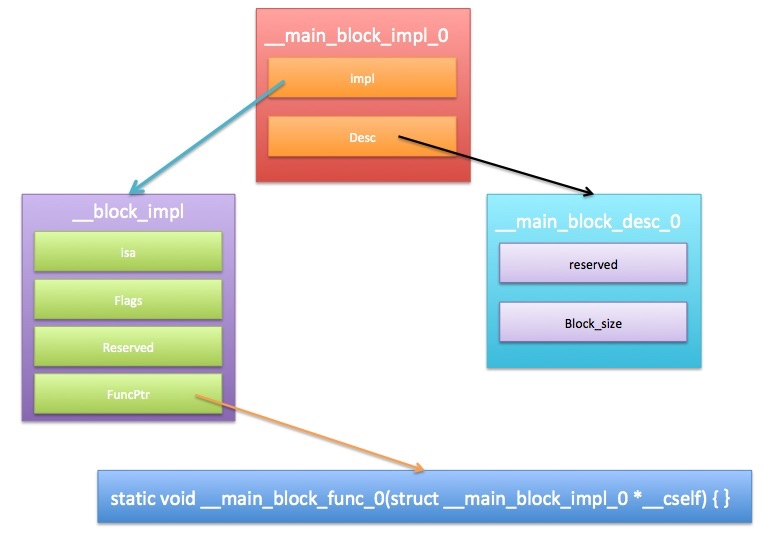
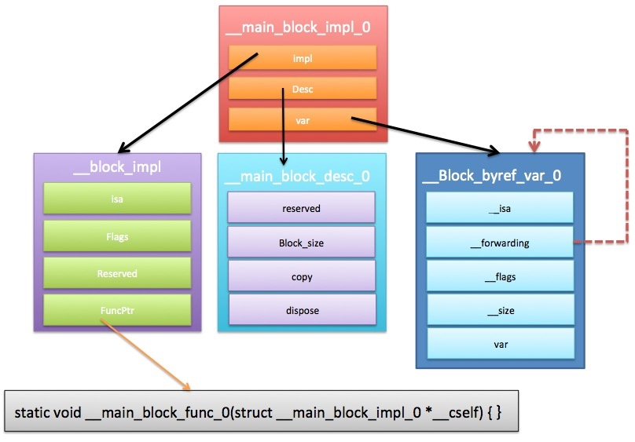

block内修改变量的值
进入主题之前，让我们回顾“Block的类型”中的内存分布图，看看下面这些变量保存在内存的哪块区域：
int var;
int var1 = 1;
static int var2;
static int var3 = 2;
int main(int argc, const char * argv[]) {
@autoreleasepool {
static int var4 = 3;
static int var5;
int var6 = 4;
}
return 0;
}
- var、var2、var5保存在BSS区；
- var1、var3、var4保存在Data区；
- var6保存在Stack区。
现在看下面代码：
typedef void(^Block)(void);
// 全局初始化变量，保存在内存的Data区
int globalVar = 10;
// 静态初始化变量，保存在内存的Data区
static int outsideStaticVar = 20;
int main(int argc, const char * argv[]) {
@autoreleasepool {
// 静态初始化变量，保存在内存的Data区
static int insideStaticVar = 30;
// 局部变量，保存在内存的Stack区
int var = 40;
// 创建一个Stack区的Block
Block block = ^{
globalVar = 11;
outsideStaticVar = 21;
insideStaticVar = 31;
// var = 41; // 编译报错，Block内不能修改栈区的变量，只能读取
NSLog(@"Block内<globalVar = %d, outsideStaticVar = %d, insideStaticVar = %d, var = %d>", globalVar, outsideStaticVar, insideStaticVar, var);
};
}
return 0;
}
由此可见，block内部不能修改block外部Stack区的变量，也就是局部变量。那怎么才能修改呢？这就是下节要讲的。
block的内部实现
没有__block修饰
我们都知道，经过__block修饰的局部变量，可以在Block内部被修改，那它的原理又是什么？我们可以先分析不用__block修饰的代码：
int main(int argc, const char * argv[]) {
@autoreleasepool {
int var = 10;
void (^block)(void) = ^{
printf("%d", var);
};
block();
}
return 0;
}
使用命令：clang -rewrite-objc main.m得到cpp代码，简化：
struct __block_impl {
void *isa;
int Flags;
int Reserved;
void *FuncPtr;
};
struct __main_block_impl_0 {
struct __block_impl impl;
struct __main_block_desc_0* Desc;
int var;
// __main_block_impl_0结构体的构造方法，初始化impl、Des和var
// var = _var
__main_block_impl_0(void *fp, struct __main_block_desc_0 *desc, int _var, int flags=0) : var(_var) {
impl.isa = &_NSConcreteStackBlock; // block类型，但是这里有时不准确
impl.Flags = flags;
impl.FuncPtr = fp; // 执行block()时调用的函数
Desc = desc; // block的描述结构体
}
};
// block内部执行的代码，被赋值给impl.FuncPtr
static void __main_block_func_0(struct __main_block_impl_0 *__cself) {
// 取block结构体中var成员的值
int var = __cself->var; // bound by copy
printf("%d", var);
}
// block描述
static struct __main_block_desc_0 {
size_t reserved; // 保留
size_t Block_size; // block的大小，就是__main_block_impl_0结构体的大小
} __main_block_desc_0_DATA = { 0, sizeof(struct __main_block_impl_0)};
int main(int argc, const char * argv[]) {
/* @autoreleasepool */
{ __AtAutoreleasePool __autoreleasepool;
int var = 10;
// 创建Block，本质就是创建__main_block_impl_0结构体
// 参数分别是：block内部执行的函数指针、block描述结构体指针、var变量的值
struct __main_block_impl_0 tmp = __main_block_impl_0(__main_block_func_0, &__main_block_desc_0_DATA, var));
struct __main_block_impl_0 *block = &tmp;
// 执行block()
*block->impl.FuncPtr(block);
}
return 0;
}

__block修饰
现在我们来看看有__block修饰会有什么不同：
int main(int argc, const char * argv[]) {
@autoreleasepool {
__block int var = 10;
void (^block)(void) = ^{
printf("var = %d,<%p>\n", var++, &var);
};
block();
}
return 0;
}
转化代码简化如下：
// 使用__block修饰后，多了这个结构体
struct __Block_byref_var_0 {
void *__isa;
__Block_byref_var_0 *__forwarding;
int __flags;
int __size;
int var;
};
struct __main_block_impl_0 {
struct __block_impl impl;
struct __main_block_desc_0* Desc;
// 现在var是一个结构体指针
__Block_byref_var_0 *var; // by ref
// 结构体构造函数，这里注意var = _var->__forwarding，也就是说__forwarding指向了自己
__main_block_impl_0(void *fp, struct __main_block_desc_0 *desc, __Block_byref_var_0 *_var, int flags=0) : var(_var->__forwarding) {
impl.isa = &_NSConcreteStackBlock;
impl.Flags = flags;
impl.FuncPtr = fp;
Desc = desc;
}
};
// block()指向的函数
static void __main_block_func_0(struct __main_block_impl_0 *__cself) {
// 定义结构体指针，指向__main_block_impl_0中的var
__Block_byref_var_0 *var = __cself->var; // bound by ref
// 获取结构体中的__forwarding中的var，
// 其实在这就是：var->var，那为什么还要经过__forwarding指针呢？这个疑问暂时放在这
printf("var = %d,<%p>\n", (var->__forwarding->var)++, &(var->__forwarding->var));
}
// 当Stack上的Block复制到Heap时调用
static void __main_block_copy_0(struct __main_block_impl_0*dst, struct __main_block_impl_0*src) {
_Block_object_assign((void*)&dst->var, (void*)src->var, 8/*BLOCK_FIELD_IS_BYREF*/);
}
// 当Heap区的Block被废弃的时候调用
static void __main_block_dispose_0(struct __main_block_impl_0*src) {
_Block_object_dispose((void*)src->var, 8/*BLOCK_FIELD_IS_BYREF*/);
}
static struct __main_block_desc_0 {
size_t reserved;
size_t Block_size;
// block描述结构体多了两个函数：copy，dispose
// 当Stack上的Block复制到Heap时调用
void (*copy)(struct __main_block_impl_0*, struct __main_block_impl_0*);
// 当Heap区的Block被废弃的时候调用
void (*dispose)(struct __main_block_impl_0*);
} __main_block_desc_0_DATA = { 0, sizeof(struct __main_block_impl_0), __main_block_copy_0, __main_block_dispose_0};
int main(int argc, const char * argv[]) {
/* @autoreleasepool */
{ __AtAutoreleasePool __autoreleasepool;
// 创建__Block_byref_var_0结构体变量var
__attribute__((__blocks__(byref))) __Block_byref_var_0 var = {(void*)0,(__Block_byref_var_0 *)&var, 0, sizeof(__Block_byref_var_0), 10};
// 和之前一样，唯一不同的是var是结构体指针
void (*block)(void) = ((void (*)())&__main_block_impl_0((void *)__main_block_func_0, &__main_block_desc_0_DATA, (__Block_byref_var_0 *)&var, 570425344));
// 执行block()
((void (*)(__block_impl *))((__block_impl *)block)->FuncPtr)((__block_impl *)block);
}
return 0;
}
从上面c++代码我们可以看出，使用__block修饰的var变量以结构体的形式出现，传给block的结构体以指针的形式，这样在block内部就可以修改局部变量的值。
